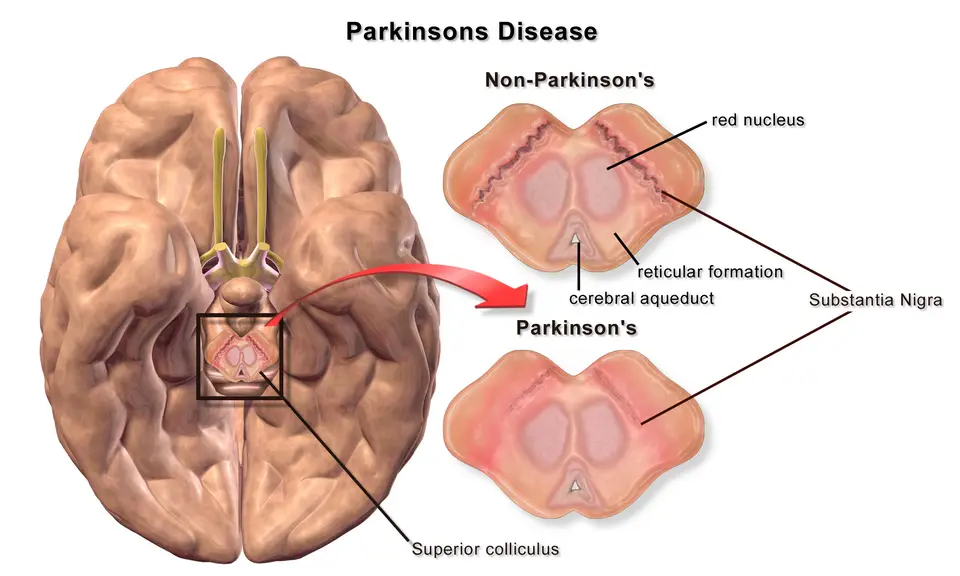

DX.2 — Dysphagie de la maladie de Parkinson
Quatre parkinsoniens sur cinq avalent mal lorsqu'on les examine, alors qu'un sur trois seulement s'en plaintS3. La pneumonie d'aspiration reste la première cause de décès de cette maladie ; le médecin cherche donc la dysphagie avant qu'elle ne parleS1.
1. Définition
UEG et ESNM décrivent en 2025 une dysphagie parkinsonienne née de la dégénérescence des voies dopaminergiques et non dopaminergiques, qui touche toutes les phases de la déglutitionS1. Une revue de portée publiée en 2026 la définit comme un syndrome moteur complexe, fait de bradykinésie, d'hypokinésie et d'akinésie des muscles de la déglutitionS4. L'atteinte peut aussi gagner l'œsophage, dont la motricité et l'ouverture des sphincters s'altèrentS2.
2. Épidémiologie (Suisse, puis Europe)
Parkinson Suisse compte plus de 15 000 personnes atteintes en Suisse, sur quelque 10 millions dans le mondeS8. La méta-analyse néerlandaise de Kalf trouve une dysphagie subjective chez 35 % des patients, mais une dysphagie objective chez 82 %S3. Les chiffres utiles et l'histoire naturelle montrent un trouble fréquent, sous-déclaré et croissant avec la maladie. Les complications observées en consultation spécialisée en donnent la mesure.
Chiffres utiles : Suisse, puis Europe
| Donnée | Valeur | Lieu et année | Source |
|---|---|---|---|
| Personnes atteintes de la maladie de Parkinson | Plus de 15 000 | Suisse, 2026 | S8 |
| Formes héréditaires | Moins de 10 % | Suisse, 2026 | S8 |
| Dysphagie déclarée, puis mesurée, méta-analyse de 12 études | 35 %, puis 82 % | Pays-Bas, 2012 | S3 |
| Même mesure chez les témoins sans maladie | 9 %, puis 23 % | Pays-Bas, 2012 | S3 |
| Dysphagie oropharyngée mesurée, puis aspiration | 82 à 95 %, puis environ 25 % | Allemagne, 2026 | S2 |
| Patients conscients de leur trouble, puis qui le signalent spontanément | 20 à 50 %, puis moins de 10 % | Allemagne, 2026 | S2 |
| Syndromes parkinsoniens parmi les patients d'une consultation universitaire de dysphagie neurogène | 18,0 % de 255 patients | Allemagne, 2026 | S6 |
Le risque relatif de dysphagie atteint 3,2 face aux témoins, que l'on mesure la plainte ou la déglutition elle-mêmeS3. La sévérité de la maladie explique l'essentiel des écarts entre les étudesS3.
Histoire naturelle et fardeau
Les troubles de la déglutition s'accentuent au fil de l'évolution, mais ils peuvent apparaître dès les stades précoces ou intermédiairesS7. Des troubles digestifs, dont la dysphagie, précèdent parfois même les signes moteurs, au stade prodromiqueS2. L'aspiration silencieuse devient plus fréquente aux stades tardifsS2. Les symptômes varient considérablement d'une personne à l'autre, et la maladie progresse plus ou moins viteS8. Le rythme du dépistage s'adapte donc au patient plutôt qu'au stade théorique de sa maladieS8.
La dysphagie conduit à la dénutrition, à la déshydratation, à la pneumonie d'aspiration et à une prise irrégulière des antiparkinsoniensS2. L'espérance de vie des patients reste pourtant comparable à celle de la population générale, ce qui rend ces complications évitables d'autant plus gravesS8.
Complications observées en consultation spécialisée
La consultation de dysphagie neurogène de l'hôpital universitaire de Francfort a suivi 255 patients, d'âge moyen 65,9 ans, de 2021 à 2023S6. La perte de poids touchait 32,8 % d'entre eux, l'étouffement 20,0 % et la pneumonie hospitalisée 12,6 %S6.
La consultation a modifié les recommandations thérapeutiques chez 42,0 % des patients, et l'alimentation y est restée dynamiqueS6. Une gastrostomie nouvelle a été posée chez 16,1 % des patients, alors que la moitié des gastrostomies existantes a pu être retiréeS6. Parmi les patients trachéotomisés, 42,9 % ont été décanulés, ce qui montre qu'une évaluation spécialisée rend aussi des fonctionsS6.
3. Physiopathologie
La maladie détruit surtout les neurones dopaminergiques de la substance noire, et la carence en dopamine qui en résulte cause les signes moteursS8. Cette carence atteint aussi les centres cérébraux de la déglutition, si bien que les automatismes comme avaler deviennent lentsS7. La base anatomo-fonctionnelle montre où siège la lésion, puis la cascade relie la synucléine au résidu pharyngé. L'atteinte du tube digestif entier explique enfin pourquoi le traitement oral devient irrégulier.
Base à connaître : la substance noire et la déglutition automatique
Une personne en bonne santé déglutit plusieurs centaines de fois par jour, presque toujours sans y penserS7. Ces déglutitions automatiques dépendent de circuits moteurs que la dopamine de la substance noire entretientS8.
La substance noire, normale puis dépigmentée. Ce schéma en couleurs de Blausen montre le cerveau vu par sa face inférieure, puis deux coupes transversales du mésencéphale, sans puis avec maladie de ParkinsonS14.

Le lecteur doit d'abord situer seul, sur l'image brute, le mésencéphale et la bande pigmentée de chaque coupe.
La copie annotée porte les quatre repères que la lecture guidée commente.
- Le cadre situe le mésencéphale, étage du tronc cérébral qui loge la substance noire.
- La bande sombre de la coupe normale correspond aux neurones dopaminergiques pigmentés de la substance noire.
- La même bande devient pâle dans la maladie de Parkinson, car ces neurones dopaminergiques disparaissent.
- Le noyau rouge reste intact et sert de repère pour situer la substance noire en avant de lui.
- La dépigmentation se voit à l’autopsie ou sur une coupe, mais une IRM standard ne la montre pas de cette façon.
- Le schéma explique la bradykinésie, mais la dysphagie dépend aussi de voies non dopaminergiques et du tronc cérébral.
Ce que l'image décide. La perte dopaminergique explique la part de la dysphagie qui répond à la lévodopa ; la part non dopaminergique exige la rééducation.

La perte dopaminergique ralentit et appauvrit chaque geste, ce qui explique que les anomalies de déglutition reproduisent la bradykinésie, l'hypokinésie et l'akinésie des membresS4. Des voies non dopaminergiques participent aussi, d'où une part de dysphagie que la lévodopa ne corrige pasS1.
Cascade : amorce, développement, installation, maintien
- Amorce : des agrégats d'alpha-synucléine s'accumulent tôt dans le système nerveux entérique et centralS2.
- Développement : dans le sous-type dit « body-first », la pathologie part du tube digestif et remonte par les neurones autonomes jusqu'au tronc cérébral, puis au cortexS2.
- Installation : la propulsion linguale et pharyngée faiblit, le réflexe tarde et le bol reste dans les vallécules plus que dans les sinus piriformesS2.
- Maintien : la rigidité et la mauvaise coordination augmentent le risque d'aspiration, tandis que la toux réflexe s'affaiblitS1S7.
Le « freezing » oropharyngé reproduit à la bouche les phénomènes de la marche : festination, tremblement et akinésie du bolS2. Les comprimés peuvent eux-mêmes rester dans le pharynx, ce qui retarde l'effet du traitementS2.
Atteinte du tube digestif entier
La maladie peut atteindre tout le tube digestif : l'oropharynx, l'œsophage, l'estomac et le côlon portent chacun leurs troubles moteurs propresS2. Le médecin garde ces quatre étages en tête lors du dépistage, car ils interagissentS2.
| Étage | Trouble moteur | Effet sur la lévodopa |
|---|---|---|
| Oropharynx | Résidus, réflexe retardé, freezingS2 | Comprimés retenus dans le pharynxS2 |
| Œsophage | Hypomotilité, spasmes, sphincters mal ouvertsS2 | Transit du comprimé ralenti |
| Estomac et grêle | Vidange retardée, Helicobacter pylori, pullulation bactérienneS2 | Réponse retardée ou partielleS2 |
| Côlon | Transit colique prolongé, constipationS2 | Surcharge médicamenteuse en amontS2 |
La plupart de ces troubles reflètent la pathologie de l'alpha-synucléine dans le système nerveux entérique et centralS2. Les interactions entre aliments et médicaments aggravent encore les symptômes moteurs, ce qui brouille l'interprétation des fluctuationsS2.
Le tableau suivant relie chaque perturbation à l'examen qui la montre et au geste qui la corrige.
| Perturbation | Exploration | Thérapeutique et mécanisme |
|---|---|---|
| Bradykinésie oropharyngée, résidus | FEES avec test à la lévodopaS2 | Lévodopa, qui réduit résidus, pénétration et temps de transitS2 |
| Comprimés bloqués dans le pharynx | FEES, observation de la priseS2 | Forme dispersible ou voie non oraleS11 |
| Aspiration des liquides | FEES ou vidéofluoroscopieS2 | Liquides épaissis, menton fléchi vers la poitrineS2 |
| Toux faible | Toux volontaire et réflexeS2 | Entraînement des muscles expiratoiresS2 |
| Vidange gastrique retardée | Scintigraphie ou test respiratoireS2 | Révision des médicaments ralentisseursS2 |
4. Démarche diagnostique
Chez un parkinsonien qui avale soudain beaucoup plus mal, le médecin écarte d'abord l'obstruction aiguë et l'impaction, rangs E1 et E2 de la Phase A. Une aggravation brutale sans infection doit faire rechercher un AVC du bulbe dorsolatéral, qui exige une évaluation immédiateS2. Les diagnostics discriminants se séparent ensuite par l'évolution, la réponse dopaminergique et l'endoscopie. Le raisonnement pas à pas évite l'erreur la plus fréquente.
Diagnostics discriminants : ce qui tranche
| Diagnostic | Élément qui tranche | Piège | Conduite si positif |
|---|---|---|---|
| AVC du tronc cérébral | Aggravation brutale sans fièvreS2 | Tout imputer à la maladie connue | Imagerie cérébrale urgenteS2 |
| Décompensation par infection ou déshydratation | Fièvre, chaleur estivale, chirurgie récenteS2 | Augmenter la lévodopa sans chercher la cause | Traitement de la causeS2 |
| Dysphagie parkinsonienne | Évolution lente, résidus valléculairesS2 | Se fier à l'absence de plainte | FEES et test à la lévodopaS2 |
| Sclérose latérale amyotrophique | Diagnostic révélé par la consultation de dysphagieS6 | Classer à tort la dysphagie « inexpliquée » | Bilan neurologique spécialisé |
| Diverticule de Zenker ou œsophagite | Endoscopie digestive hauteS2 | Oublier une cause œsophagienne associée | Gastro-entérologue |
Dans une consultation universitaire allemande, le diagnostic principal a changé chez 38,8 % des patients adressés pour dysphagieS6. Parmi 110 dysphagies inexpliquées, 70,9 % ont reçu un diagnostic neurologique, surtout une sclérose latérale amyotrophique ou un syndrome parkinsonienS6.
Raisonnement pas à pas : le traitement qui « ne marche plus »
Exemple chiffré : un homme de 74 ans reçoit Madopar « 125 » quatre fois par jour, dose d'entretien usuelleS11. Il décrit une phase « on » tardive après le petit déjeuner et une perte de poidsS2. Le débutant augmente la dose, alors que l'AIPS demande de fixer la posologie la plus faible possibleS11.
- Mécanisme : le comprimé peut rester dans le pharynx, et les protéines du repas concurrencent l'absorption de la lévodopaS2S11.
- Signe : le patient tousse en mangeant et met plus de temps pour ses repas, deux drapeaux rougesS2.
- Examen : la FEES montre un comprimé retenu dans les vallécules et compare la déglutition avant puis après la priseS2.
- Décision : Madopar LIQ dissous se prend 30 minutes avant le repas, ce qui contourne le comprimé et la concurrence protéiqueS11.
Les antiacides réduisent l'absorption de la lévodopa de 32 %, et le sulfate de fer abaisse son pic et son exposition de 30 à 50 %S11. Le médecin revoit donc aussi ces co-prescriptions avant de conclure à un échecS11.
5. Anamnèse ciblée et drapeaux rouges
L'anamnèse ciblée se répète tous les 3 à 6 mois, car le patient reconnaît rarement la dysphagie comme un symptôme de sa maladieS2. Le médecin recherche d'abord la toux et les raclements, puis la difficulté à prendre les comprimés. Il interroge ensuite sur le bavage, la perte de poids et les fluctuations motrices. Les questions recommandées structurent l'entretien, puis les drapeaux rouges imposent chacun une action.
Toux, raclements et voix pâteuse
Caractère : le patient décrit des quintes de toux, des raclements répétés et une voix qui devient pâteuse pendant les repasS7. Horaire : le symptôme augmente dans les phases « off », puisque la lévodopa améliore les résidus et la pénétrationS2. Facteur aggravant : une double tâche pendant le repas favorise les fausses routes, d'où la consigne de l'éviterS2.
Typique ou non : la toux est typique mais trompeuse, car le réflexe de toux peut s'affaiblir et l'aspiration devenir silencieuseS7.
Comprimés difficiles à avaler
Le patient signale des comprimés qui « collent » ou restent dans la gorge ; l'endoscopie retrouve en effet des résidus médicamenteux oropharyngésS2. Ce symptôme est très évocateur, car il ralentit l'absorption de la lévodopa et produit des réponses retardées ou absentesS2. Une baisse d'efficacité des comprimés doit donc faire penser à la déglutition avant d'augmenter la doseS2.
Bavage (sialorrhée)
Le parkinsonien avale moins souvent, si bien que la salive s'accumule ; elle s'écoule lorsque la tête penche et que la bouche reste entrouverteS7. La production salivaire n'augmente pas : ces patients produisent même relativement peu de saliveS7. Le bavage traduit donc une déglutition rare, mais il ne suffit pas à repérer une dysphagie sévère avec aspirationS2.
Perte de poids et repas prolongés
Le patient met beaucoup plus de temps pour manger, ce que Parkinson Suisse relève parmi les premiers signesS7. La dénutrition progresse avec la maladie, car l'odorat, le goût, les troubles moteurs et des besoins énergétiques accrus s'additionnentS9. Une perte de poids éveille le soupçon et justifie un avis spécialisé rapideS9.
Fluctuations motrices après les prises
Le médecin demande si les phases « on » tardent, restent partielles ou manquent après une prise, et si le problème s'aggrave après les repasS2. Les protéines alimentaires limitent l'action de la lévodopa, d'où des fluctuations qui imitent un échec du traitementS9. La vidange gastrique retardée et la constipation aggravent aussi l'absorptionS2.
Questions recommandées par la procédure germanophone de 2026
- Le médecin demande si le patient a des difficultés digestives, puis lui fait montrer la partie la plus atteinteS2.
- Il recherche des difficultés à avaler les aliments ou les médicaments, une toux, un étouffement ou une voix mouilléeS2.
- Il interroge sur un bavage important, une perte de poids notable et des épisodes de fièvre inexpliquéeS2.
- Il demande si une pneumonie est survenue durant le dernier moisS2.
- Il précise la fréquence des selles, car la constipation modifie l'absorption des médicamentsS2.
Ces questions servent d'entrée en matière, sans prétendre à une fiabilité complète, car la plainte du patient sous-estime souvent l'atteinte mesuréeS2.
Drapeaux rouges : signification et action
| Drapeau rouge | Signification | Action immédiate |
|---|---|---|
| Fièvre inexpliquée ou pneumonie dans le dernier mois | Aspiration probableS2 | Examen instrumental de la déglutitionS2 |
| Aggravation brutale sans infection | AVC du tronc possibleS2 | Imagerie et avis neurologique urgentsS2 |
| Impossibilité d'avaler les antiparkinsoniens | Risque de crise akinétiqueS2 | Voie non orale transitoireS2 |
| Fièvre, rigidité et confusion après un arrêt de lévodopa | État proche du syndrome malin des neuroleptiquesS11 | Surveillance hospitalière, reprise dopaminergiqueS11 |
| Perte de poids notable | DénutritionS2 | Bilan nutritionnel et diététicienneS9 |
| Toux à chaque repas | Aspiration récurrenteS2 | FEES puis adaptation des texturesS2 |
6. Examen physique ciblé, région par région
L'examen se fait dans un état moteur noté, « on » ou « off », car la déglutition varie avec la dopamine disponibleS2. Le médecin porte d'abord son examen sur la posture, puis le visage et la bouche et la parole. Il poursuit par l'état moteur des membres, l'observation d'un repas, puis les poumons et le poids.
Région 1 — Posture de la tête et du tronc
Signe : le haut du corps tend à se courber vers l'avant à mesure que la maladie progresseS8. Geste : le médecin observe le patient assis, puis vérifie qu'il tient le dos bien droit pour mangerS9. Piège : la tête penchée favorise l'écoulement de salive, ce qui ne prouve pas une hypersalivationS7.
Région 2 — Visage, lèvres et cavité buccale
Signe : le visage devient moins expressif, la bouche reste entrouverte et la salive peut s'écoulerS8S7. Geste : le médecin inspecte la bouche à la recherche de restes d'aliments ou de comprimés après le repasS2. Valeur : des restes en bouche signent un temps oral inefficace et justifient l'hygiène buccale après chaque repasS7.
Région 3 — Parole et voix
Signe : la voix devient souvent plus basse et moins intelligible, et la parole monotoneS8. Geste : le médecin écoute la voix avant puis après une gorgée, à la recherche d'une voix pâteuseS7. Piège : la voix faible traduit l'hypokinésie de la maladie et ne signe pas, à elle seule, une aspirationS4.
Région 4 — État moteur des membres
Signe : la bradykinésie, la rigidité et le tremblement de repos situent le patient dans son cycle de traitementS8. Geste : le médecin note l'heure de la dernière prise et l'état « on » ou « off » au moment de l'examenS2. Valeur : une dysphagie pire en « off » oriente vers une composante sensible à la lévodopaS2.
Région 5 — Observation d'un repas
Signe : des repas prolongés et une toux en mangeant figurent parmi les drapeaux rouges qui imposent un examen instrumentalS2. Geste : le médecin regarde le patient manger et boire, puis compte les déglutitions nécessaires pour vider la boucheS7. Piège : la vitesse de déglutition ne prédit pas l'aspiration chez le parkinsonienS2.
Région 6 — Poumons et poids
Signe : une fièvre ou des signes de pneumonie orientent vers l'aspiration, première cause de décès de la maladieS1. Geste : le médecin ausculte les bases et pèse le patient à chaque visiteS9. Valeur : la fragilité prédit la pneumonie avec un rapport de cotes de 1,49 dans une consultation de dysphagie neurogèneS6.
7. Approche syndromique
La revue de 2026 décrit 19 caractéristiques oropharyngées distinctes chez 1 797 parkinsoniensS4. Elles se regroupent en quatre syndromes, dont la fenêtre des signes précise la définition et le mécanisme.
| Syndrome | Signes fonctionnels | Signes physiques |
|---|---|---|
| 7.1 Hypokinésie oropharyngée | Repas lents, déglutitions répétéesS7 | Résidus valléculaires, réflexe retardéS2 |
| 7.2 Défaut de protection | Toux, raclementsS7 | Pénétration, aspiration parfois silencieuseS2 |
| 7.3 Échec du traitement oral | Comprimés bloqués, phases « on » retardéesS2 | Résidus médicamenteux à la FEESS2 |
| 7.4 Dysmotilité œsophagienne | Gêne plus basse, après la gorgeS2 | Hypomotilité ou spasmes en manométrieS2 |
Définition et mécanisme des signes
- Résidu valléculaire : le bol reste entre la base de langue et l'épiglotte, car la base de langue recule trop peuS2.
- Freezing oropharyngé : le bol oscille dans la bouche sans être lancé, à la manière du piétinement de la marcheS2.
- Aspiration silencieuse : le bol passe dans la trachée sans toux ni raclement, ce qui la rend dangereuseS7.
- Défaut d'efficacité : le patient n'avale plus entièrement les aliments ni les médicaments, d'où un apport insuffisantS7.
- Toux réflexe affaiblie : le parkinsonien tousse moins fort après une fausse route, ce qui retarde l'expulsion du bol aspiréS7.
- Réponse « on » retardée : la dose de lévodopa agit tard ou partiellement, car le comprimé stagne avant d'atteindre l'intestinS2.
- Ouverture sphinctérienne altérée : les sphincters supérieur et inférieur de l'œsophage s'ouvrent mal, ce que la manométrie montreS2.
8. Diagnostic positif et critères
Aucun score ne pose seul le diagnostic : il repose sur l'examen instrumental chez un patient dont la maladie de Parkinson est établieS2. Les outils de dépistage et leurs limites montrent ce qui suffit et ce qui ne suffit pas.
Outils de dépistage et leurs limites
| Outil | Ce qu'il apporte | Limite |
|---|---|---|
| Swallowing Disturbance Questionnaire (SDQ) | Questionnaire proposé pour le dépistageS2 | Il reste moins fiable que l'examenS2 |
| Munich Dysphagia Test–Parkinson's Disease | Outil spécifique de la maladieS2 | Sa fiabilité reste discutéeS2 |
| EAT-10 et GUSS | Utiles dans d'autres maladiesS2 | Peu performants dans cette maladieS2 |
| Question de l'échelle MDS-UPDRS sur les comprimés et les repas | Réponse rapide en consultationS2 | Elle ne détecte pas l'aspirationS2 |
Ce qui suffit : une FEES ou une vidéofluoroscopie anormale confirme la dysphagie et en précise le phénotypeS2. Ce qui ne suffit pas : l'anamnèse et les questionnaires ne détectent de façon fiable ni les formes légères ni les formes sévèresS2. L'écart entre 35 % de plaintes et 82 % d'anomalies mesurées justifie cette prudenceS3.
9. Examens complémentaires
9.a Gold standard : la FEES avec test à la lévodopa sert de référence pour détecter la dysphagie et en distinguer les phénotypesS2.
9.b Première intention : le dépistage en consultation repère les patients qui doivent passer l'examen instrumentalS2.
9.c Alternatives : la vidéofluoroscopie remplace la FEES lorsqu'il faut voir aussi le temps oral et le sphincter supérieur de l'œsophageS2.
9.d Deuxième intention : la manométrie et l'endoscopie digestive explorent l'œsophage, puis le bilan gastrique cherche une vidange retardéeS2.
Dépistage en consultation
Indication : le dépistage concerne tout parkinsonien, tous les 3 à 6 mois, et dès le diagnostic dans le sous-type « body-first »S2. Prescription : le médecin pose des questions simples, puis demande au patient de montrer la partie du tube digestif la plus atteinteS2.
| Réponse | Signification | Conduite |
|---|---|---|
| Toux, étouffement, voix mouillée | Défaut de protectionS2 | FEES |
| Difficulté avec les comprimés | Résidus médicamenteux probablesS2 | Forme galénique adaptée |
| Perte de poids, fièvre inexpliquée | Dysphagie compliquéeS2 | Examen instrumental rapide |
Piège : les patients décrivent souvent mal la sévérité de leur trouble, même s'ils désignent assez bien l'étage le plus atteintS2.
FEES et test à la lévodopa
Principe : un endoscope fin et souple, muni d'une caméra, montre le processus de déglutition par le nezS7. Indication : dysphagie suspectée, pneumonie inexpliquée ou réponse insuffisante au traitement oralS2.
Le test à la lévodopa compare deux examens, avant puis après une prise, afin d'objectiver la réponse de la dysphagie au traitementS2. Une amélioration des résidus, de la pénétration et du temps de transit justifie l'ajustement dopaminergiqueS2.
| Résultat | Signification | Conduite |
|---|---|---|
| Résidus surtout valléculaires | Hypokinésie de la base de langueS2 | Rééducation, ajustement de la lévodopa |
| Amélioration nette après lévodopa | Dysphagie dopa-sensibleS2 | Optimiser la couverture dopaminergique |
| Aspiration sans réaction (score PAS 8) | Aspiration silencieuseS6 | Textures adaptées, discussion de sonde |
| Comprimé resté dans le pharynx | Défaut de transport médicamenteuxS2 | Forme dispersible ou voie non orale |
Le score 8 de l'échelle de pénétration-aspiration prédit la pneumonie avec un rapport de cotes de 3,67S6. Les séquences de cas se consultent dans le catalogue de Radiopaedia par la recherche « parkinson swallow ».
Vidéofluoroscopie
Indication : elle concerne le bilan des temps oral et pharyngé et du sphincter supérieur de l'œsophage, avec plusieurs consistances d'aliments et de liquidesS2. Interprétation : elle classe le trouble pour chaque consistance testée et montre où le bol s'arrêteS2. Piège : elle s'accorde mal aux examens répétés avant et après lévodopa, que la FEES réalise plus simplementS2.
Manométrie haute résolution et endoscopie digestive
Indication : une gêne œsophagienne isolée ou associée la justifie, même aux stades précocesS2. La manométrie haute résolution mesure les pressions de l'œsophage et l'ouverture de ses sphinctersS2. L'endoscopie digestive haute recherche une autre cause, comme une œsophagite ou un diverticule de ZenkerS2.
Bilan de la vidange gastrique
Indication : des fluctuations après les repas ou une réponse imprévisible à la lévodopa la justifientS2. La scintigraphie au repas solide marqué au technétium 99m définit la vidange retardée par une rétention de plus de 60 % à 2 heuresS2. Elle la retient aussi au-delà de 10 % à 4 heures ; le test respiratoire à l'octanoate offre une alternative non radioactiveS2.
10. Arbre décisionnel
L'arbre part d'un parkinsonien qui tousse ou maigrit et place les situations menaçantes en tête.
- Si la dysphagie s'aggrave brutalement sans infection, alors une imagerie recherche un AVC du troncS2.
- Si une infection, une déshydratation ou une chirurgie précède l'aggravation, alors le médecin traite la cause et protège la prise dopaminergiqueS2.
- Si le patient ne peut plus avaler ses comprimés, alors il reçoit une forme dispersible ou une voie non orale transitoireS2.
- Sinon, un drapeau rouge ou un dépistage positif conduit à la FEES avec test à la lévodopaS2.
- Si la dysphagie répond à la lévodopa, alors le neurologue ajuste la couverture dopaminergiqueS2.
- Si elle ne répond pas, alors la rééducation, les textures et les postures prennent le premier rôleS2.
- Si l'aspiration est sévère, alors l'équipe informe le patient et ses proches, puis discute la gastrostomieS2.
11. Prise en charge selon les recommandations suisses
11.A But : le traitement vise à garder une alimentation sûre et suffisante, à assurer la prise des antiparkinsoniens et à prévenir la pneumonieS2.
11.B Moyens : la conduite d'urgence protège le patient qui ne peut plus avaler, puis le traitement par étapes associe médicament, rééducation et alimentation. Les fiches de la lévodopa et bensérazide et de la rotigotine recopient leurs AIPS. Le tableau des médicaments et les médicaments à éviter complètent la décision. Les essais de rééducation, le choix de la forme de lévodopa, le patch en pratique, les textures au quotidien et la décision de gastrostomie précisent chaque moyen.
Urgence — conduite chronologique
- Minute 0 : le médecin cherche une infection, une déshydratation ou une chirurgie récente, car elles décompensent la déglutition jusqu'à la crise akinétiqueS2.
- Première heure : une aggravation brutale sans infection fait demander une imagerie à la recherche d'un AVC bulbaireS2.
- Premières heures : la lévodopa ne s'interrompt jamais brutalement, car l'arrêt peut provoquer un état grave proche du syndrome malin des neuroleptiquesS11.
- Même jour : si les comprimés ne passent plus, la forme dispersible ou le patch transdermique de rotigotine contourne le tube digestifS11S2.
- Jours suivants : la FEES fixe les consistances permises, puis l'équipe discute la sonde si l'aspiration est sévèreS2.
Prévoir : l'apomorphine sous-cutanée ou sublinguale, la lévodopa inhalée, la lévodopa sous-cutanée ou jéjunale contournent aussi le tube digestifS2. La voie rectale de la lévodopa reste une solution transitoire, et l'amantadine intraveineuse cause souvent des effets indésirablesS2.
Traitement par étapes
- Optimisation dopaminergique : la lévodopa améliore les résidus, la pénétration et le transit, ce que le test endoscopique objectiveS2.
- Logopédie : la rééducation convient au patient capable de suivre les consignes, et elle cible le mécanisme observéS2.
- Postures et textures : la flexion du menton et les liquides épaissis préviennent l'aspiration des liquidesS2.
- Entraînement expiratoire : un programme de 4 semaines améliore la sécurité et l'efficacité, mais l'effet s'efface à l'arrêtS2.
- Rétroaction vidéo : la thérapie assistée par vidéo montre au patient sa propre déglutitionS2.
- Repas : le patient mange au calme, assis dos droit, et vide sa bouche avant chaque nouvelle bouchéeS9S7.
La revue Cochrane de 2026 trouve que l'entraînement expiratoire pourrait améliorer la sécurité à 4 semaines, avec une différence standardisée de −0,66S5. La certitude reste très faible, et l'effet à 3 mois ne se confirme pasS5. La preuve de la stimulation électrique neuromusculaire reste trop incertaine pour une recommandation fermeS2.
Lévodopa et bensérazide — Madopar® et Madopar LIQ (n° 38096)
| Rubrique | Contenu de l'AIPS |
|---|---|
| Indication | Syndrome parkinsonien sous toutes ses formes, sauf d'origine médicamenteuse ; Madopar LIQ chez le patient dysphagiqueS11 |
| Dose AIPS initiale | Chez l'adulte, 1 comprimé de Madopar LIQ « 62,5 » trois ou quatre fois par jour, puis hausse lenteS11 |
| Dose d'entretien | 1 comprimé dispersible de Madopar LIQ « 125 » trois à six fois par jourS11 |
| Préparation | Dissoudre dans 25 à 50 ml d'eau, sans jus, lait ni boisson chaude, puis boire dans la demi-heureS11 |
| Contre-indications | Moins de 25 ans, affection cardiaque, psychose, glaucome à angle fermé, IMAO non sélectifsS11 |
| Grossesse et allaitement | Contre-indiqué pendant la grossesse ; l'allaitement doit être arrêtéS11 |
| Surveillance | Fonctions hépatique et rénale et formule sanguine rapprochées au début, puis au moins une fois par anS11 |
| Mises en garde | Somnolence et endormissement soudain, troubles du contrôle des impulsions, dépression ; conduite déconseillée en cas de somnolenceS11 |
| Peau | Risque de mélanome environ 2 à 6 fois plus élevé chez le parkinsonien, d'où un examen cutanéS11 |
La suspension se dépose vite et doit être remuée, puis la forme dispersible agit plus tôt que la forme standard, ce qui impose de surveiller la réponse au changementS11. Les gélules et les comprimés DR s'avalent entiers, alors que les comprimés standard peuvent être fragmentésS11.
Rotigotine — Neupro® patch transdermique (n° 57417)
| Rubrique | Contenu de l'AIPS |
|---|---|
| Indication | Maladie de Parkinson, seule au stade précoce ou associée à la lévodopa lors des fluctuationsS12 |
| Dose AIPS, stade précoce | Chez l'adulte, 2 mg/24 h, puis paliers hebdomadaires de 2 mg/24 h, au plus 8 mg/24 hS12 |
| Dose AIPS, stade avancé | 4 mg/24 h, puis paliers hebdomadaires de 2 mg/24 h, au plus 16 mg/24 hS12 |
| Contre-indications | IRM ou cardioversion, car la couche d'aluminium brûle la peau ; insuffisance hépatique sévèreS12 |
| Grossesse et allaitement | Grossesse seulement en cas d'absolue nécessité ; pas d'allaitement, la lactation étant inhibéeS12 |
| Arrêt | Baisse progressive de 2 mg/24 h tous les deux joursS12 |
| Mises en garde | Arrêt brutal : syndrome évoquant un syndrome malin ou sevrage avec douleur, fatigue, dépression, sueurs et anxiétéS12 |
| Psychisme | Hallucinations, confusion, idées délirantes ; dyskinésies et œdèmes plus fréquents avec la lévodopaS12 |
Le patch est appliqué une fois par jour sur une peau saine, sur un site qui change chaque jour ; aucun effet des repas ni d'une maladie digestive n'est attenduS12. Des réactions au site d'application surviennent chez 34,2 % des patients dans les études de la maladie de ParkinsonS12.
Rééducation : ce que disent les essais
La revue Cochrane de 2026 compte davantage d'essais randomisés qu'auparavant, mais ils restent hétérogènes et souvent mal rapportésS5. L'entraînement expiratoire améliore peut-être la sécurité à la fin des 4 semaines, d'après 2 essais et 113 participantsS5.
La thérapie assistée par vidéo ajoutée à la logopédie améliore peut-être la qualité de vie, avec une différence moyenne de 1,62 en fin de traitementS5. La stimulation électrique neuromusculaire n'a été testée que chez 18 participants, ce qui rend l'estimation très incertaineS5.
La procédure germanophone cite aussi l'entraînement sensorimoteur de protection des voies aériennes, qui améliore la toux réflexe et volontaireS2. La méthode Lee Silverman, conçue pour la voix, pourrait aussi améliorer la déglutitionS2.
Choisir la forme de lévodopa
| Forme | Particularité de l'AIPS | Place chez le dysphagique |
|---|---|---|
| Madopar LIQ dispersible | Absorption plus rapide, indication explicite en cas de dysphagieS11 | Premier choix quand les comprimés passent mal |
| Comprimés standard | Fragmentables à volonté pour être avalés plus facilementS11 | Possible si les fragments passent sans résidu |
| Gélules | Toujours avalées entières, sans être croquéesS11 | Peu adaptées |
| Madopar DR | Effet après environ une heure, comprimé sécable en deuxS11 | Fluctuations, si la déglutition le permet |
La posologie optimale demande souvent 4 à 6 semaines, et toute hausse ultérieure de la dose journalière se fait mensuellementS11. Le passage d'une forme à l'autre impose donc une surveillance clinique rapprochéeS11.
Patch de rotigotine en pratique
Le patch se colle sur l'abdomen, la cuisse, la hanche, le flanc, l'épaule ou le bras, jamais sur une peau rouge, irritée ou blesséeS12. Aucune crème ni poudre ne s'applique à cet endroit, car elles diminuent l'adhérenceS12.
Si le patch se détache, un nouveau patch est appliqué pour le reste de la journéeS12. La chaleur externe, comme un coussin chauffant ou un sauna, augmente l'absorption et doit être évitéeS12.
Le pramipexole ou le ropinirole peuvent être remplacés par le patch après une nuit, soit 12 heures, et la cabergoline après 24 heuresS12. Les accès de somnolence et l'hypotension orthostatique imposent une surveillance au début du traitementS12.
Textures et repas au quotidien
Aux stades avancés, les aliments solides et souvent les boissons posent problème ; il peut alors être utile de mixer les repas ou d'épaissir les liquidesS7. Les aliments sont cuits, mixés puis tamisés, avant de retrouver leur forme dans des moules à puréeS7.
Le patient vide sa bouche avant chaque bouchée, quitte à déglutir plusieurs fois, puis retire les restes après le repasS7. Le repas se prend au calme, sans distraction, puisque la double tâche augmente les fausses routesS9S2.
Les personnes atteintes peuvent manger de tout, et une prudence excessive fait plus de tort qu'un écart occasionnelS9.
Gastrostomie : une décision partagée
Lorsqu'un examen instrumental montre une dysphagie sévère avec risque d'aspiration, l'équipe informe sans tarder le patient et ses prochesS2. La discussion réunit logopédistes, gastro-entérologues, nutritionnistes et médecin de familleS2.
Elle pèse le changement de médicaments, les textures modifiées et la gastrostomie avec toutes ses conséquencesS2. La rééducation comportementale peut alors ne plus convenir, selon le niveau de vigilance et de coopérationS2.
Tableau des médicaments
| Molécule ® | Dose AIPS | Voie et rythme | Contre-indication majeure |
|---|---|---|---|
| Lévodopa et bensérazide, Madopar LIQ | « 125 » trois à six fois par jour en entretienS11 | Orale dissoute, 30 minutes avant ou 1 heure après le repasS11 | GrossesseS11 |
| Rotigotine, Neupro | Jusqu'à 8 mg/24 h au stade précoceS12 | Transdermique, un patch par jourS12 | IRM sans retrait du patchS12 |
Le Madopar se prend à distance des repas, car les protéines alimentaires concurrencent l'absorption de la lévodopaS11. Le patch convient au patient à jeun, puisque sa voie ne dépend pas du tube digestifS12.
Médicaments à éviter
Le métoclopramide est contre-indiqué dans la maladie de Parkinson et en association avec la lévodopa, selon son AIPSS13. Les neuroleptiques, les opioïdes et la réserpine antagonisent l'action du MadoparS11. La dompéridone accélère la vidange gastrique, mais elle peut allonger l'intervalle QTS2. Le pantoprazole, les neuroleptiques et les opioïdes peuvent ralentir encore la vidange et méritent une révisionS2.
L'AIPS du Madopar indique que le métoclopramide accélère l'absorption de la lévodopa, mais la contre-indication de l'AIPS du Paspertin l'emporteS11S13. Avant une anesthésie, le Madopar se poursuit jusque peu avant l'intervention, sauf avec l'halothaneS11.
Situations spéciales : chez la femme en âge de procréer, le Madopar exige une contraception fiable et un test de grossesse préalableS11. Chez le sujet âgé, la dose de lévodopa se fixe avec le même soin et reste aussi faible que possibleS11. Une insuffisance rénale légère à modérée n'impose aucun ajustement du Madopar, ni de la rotigotine même en dialyseS11S12.
Volet social et assurances : Parkinson Suisse met à disposition des fiches sur l'alimentation et une équipe de neurologues bénévoles qui répond aux questions médicalesS7. Le livre suisse de recettes mixées « Make food soft », conçu par le chef de la fondation suisse contre l'épilepsie, propose plus de 80 recettesS7. Une alimentation agréable et partagée aide à éviter la dénutrition, car le patient trop prudent finit par trop peu mangerS9.
11.C Surveillance : le médecin repose les questions clés tous les 3 à 6 mois et pèse régulièrement le patientS2S9. Il répète l'examen instrumental lorsque la clinique change, puis traite toute anomalie quel que soit le stadeS2.
11.D Pronostic : la dysphagie s'aggrave avec la durée de la maladie, et la pneumonie d'aspiration en reste la première cause de décèsS2S1. Les critères de sortie s'énumèrent un par un.
Critères de sortie
- Les antiparkinsoniens passent par une forme que le patient avale sans résidu, ou par une voie non oraleS2.
- La consistance des aliments et des liquides a été fixée après examenS2.
- Le patient et ses proches connaissent le risque d'aspiration et les gestes de repasS2.
- La logopédie, la diététique et le suivi neurologique sont organisés en réseauS2.
- Le poids est stable et la prise de lévodopa se fait à distance des repas protéinésS9.
La maladie ne guérit pas ; l'objectif réaliste reste une déglutition sûre et une alimentation conservant son plaisirS7.
12. Prévention
Primaire : aucune mesure n'empêche la dysphagie de la maladie de Parkinson, mais le dépistage commence dès le diagnostic chez les patients à risqueS2. Secondaire : le dépistage répété et la FEES trouvent la dysphagie avant la pneumonie, ce que justifie la sous-déclaration du troubleS3. Tertiaire : l'hygiène buccale après chaque repas, la constipation prévenue et 1,5 à 2 litres d'eau par jour limitent les complicationsS7S9. Une bonne digestion favorise aussi l'absorption de la lévodopaS9. La prévention de la constipation fait donc partie de la prise en charge de la dysphagie.
Prévention de la constipation
Beaucoup de patients souffrent de constipation, souvent par baisse d'activité des muscles digestifsS9. Une alimentation riche en fibres, issue des fruits, des légumes, des céréales complètes et des légumineuses, nourrit les bactéries intestinales bénéfiquesS9.
Les prébiotiques et les probiotiques, présents dans le yaourt, le kéfir ou la choucroute, peuvent aider en cas de constipationS9. Si ces mesures échouent, la procédure germanophone cite les laxatifs osmotiques comme le macrogol, puis les laxatifs stimulants et le prucaloprideS2.
13. Points clés
- Le parkinsonien sous-déclare sa dysphagie ; le médecin la recherche activement tous les 3 à 6 moisS2.
- La FEES avec test à la lévodopa confirme la dysphagie et dit si le traitement dopaminergique l'améliore.
- Des comprimés qui passent mal expliquent souvent un traitement qui semble perdre son effet.
- La lévodopa ne s'arrête jamais brutalement ; si le patient n'avale plus, une forme dispersible ou un patch prennent le relais.
- Le métoclopramide est contre-indiqué dans la maladie de Parkinson.
14. Pièges et questions fréquentes à l'examen fédéral suisse
Les onze questions suivantes portent sur les confusions de conduite, de médicament et de gravité ; la grille des réponses renvoie au point.
Questions d'examen, réponses et raisons
| Question | Réponse | Raison |
|---|---|---|
| Un parkinsonien nie toute gêne à avaler ; peut-on exclure une dysphagie ? | Non | 82 % d'anomalies mesurées contre 35 % de plaintes, point 2S3 |
| Quel antiémétique est contre-indiqué chez lui ? | Le métoclopramide | Contre-indication de l'AIPS, point 11S13 |
| Hospitalisé à jeun, faut-il arrêter la lévodopa ? | Non, il faut une voie de remplacement | Risque d'état proche du syndrome malin, point 11S11 |
| Le bavage prouve-t-il une hypersalivation ? | Non | Il traduit des déglutitions trop rares, point 5S7 |
| Le patient doit passer une IRM ; que faire du patch de rotigotine ? | Le retirer | Couche d'aluminium et brûlure, point 11S12 |
| Dans quoi dissoudre Madopar LIQ ? | Dans 25 à 50 ml d'eau | Ni jus, ni lait, ni boisson chaude, point 11S11 |
| Quel examen objective la réponse de la dysphagie à la lévodopa ? | Le test FEES à la lévodopa | Comparaison avant et après la prise, point 9S2 |
| Un patient prend Madopar avec son antiacide ; quel effet attendre ? | Moins de lévodopa absorbée | Absorption réduite de 32 %, point 4S11 |
| Faut-il arrêter brutalement le patch de rotigotine avant une chirurgie digestive ? | Non, sauf IRM ou cardioversion | Arrêt brutal dangereux ; le patch contourne le tube digestif, point 11S12 |
| Le questionnaire GUSS suffit-il à dépister la dysphagie parkinsonienne ? | Non | Il performe mal dans cette maladie, point 8S2 |
| Dysphagie brutale sans fièvre chez un parkinsonien connu : quel diagnostic évoquer ? | Un AVC du tronc | Imagerie urgente, point 4S2 |
Sources
Toutes les sources ont été lues le 12.11.2026 (Europe/Zurich).
- [S1] Mari A, Calabrese F, Lorenzon G et al. Esophageal and Oropharyngeal Dysphagia: Clinical Recommendations From the United European Gastroenterology and European Society for Neurogastroenterology and Motility. United European Gastroenterology Journal 2025;13(6). doi:10.1002/ueg2.70062 (texte intégral PMC12269739 lu le 12.11.2026). https://pmc.ncbi.nlm.nih.gov/articles/PMC12269739/
- [S2] Dysphagia and gastrointestinal disorders in Parkinson's disease: towards a diagnostic standard operating procedure for the interprofessional neurological outpatient care. Journal of Neural Transmission 2026. doi:10.1007/s00702-026-03195-z (texte intégral PMC13743560 lu le 12.11.2026 ; atelier d'experts germanophones, Francfort, novembre 2025). https://pmc.ncbi.nlm.nih.gov/articles/PMC13743560/
- [S3] Kalf JG, de Swart BJ, Bloem BR, Munneke M. Prevalence of oropharyngeal dysphagia in Parkinson's disease: a meta-analysis. Parkinsonism & Related Disorders 2012;18(4):311-315. doi:10.1016/j.parkreldis.2011.11.006 (résumé PubMed lu le 12.11.2026). https://doi.org/10.1016/j.parkreldis.2011.11.006
- [S4] Characteristics of Swallowing Function in People with Parkinson's Disease: A Scoping Review. Movement Disorders 2026;41(3):565-580. doi:10.1002/mds.70164 (résumé PubMed lu le 12.11.2026). https://doi.org/10.1002/mds.70164
- [S5] Battel I, Arienti C, Del Furia MJ et al. Rehabilitation interventions for oropharyngeal dysphagia in people with Parkinson's disease. Cochrane Database of Systematic Reviews 2026;1:CD015816. doi:10.1002/14651858.CD015816.pub2 (résumé PubMed lu le 12.11.2026). https://doi.org/10.1002/14651858.CD015816.pub2
- [S6] Impact of a Neurogenic Dysphagia Outpatient Clinic on Diagnosis, Treatment, and Nutrition. European Journal of Neurology 2026;33(3):e70544. doi:10.1111/ene.70544 (résumé PubMed lu le 12.11.2026 ; hôpital universitaire de Francfort). https://doi.org/10.1111/ene.70544
- [S7] Parkinson Suisse. Troubles de la déglutition : conserver le plaisir de manger, page lue le 12.11.2026. https://www.parkinson.ch/fr/maladie-de-parkinson/themes/alimentation-et-parkinson/troubles-de-la-deglutition-conserver-le-plaisir-de-manger
- [S8] Parkinson Suisse. Qu'est-ce que la maladie de Parkinson ?, page lue le 12.11.2026. https://www.parkinson.ch/fr/maladie-de-parkinson
- [S9] Parkinson Suisse. Alimentation et Parkinson : l'essentiel, fiche d'information 2026, lue le 12.11.2026. https://www.parkinson.ch/fileadmin/parkinson/bilder/wissen_krankheit/themen/Faktenblatt-Ernaehrung-Parkinson-Schweiz-FR.pdf
- [S11] Swissmedic, information professionnelle (AIPS) Madopar® (lévodopa, bensérazide), n° 38096, Roche Pharma (Schweiz) AG, mise à jour juin 2023, lue le 12.11.2026. https://files.refdata.ch/simis-public-prod/MedicinalDocuments/4c73b0f4da6b4695929c458f54aa2501-fr.html
- [S12] Swissmedic, AIPS Neupro® (rotigotine), n° 57417, UCB-Pharma SA, mise à jour mars 2021, lue le 12.11.2026. https://files.refdata.ch/simis-public-prod/MedicinalDocuments/43045a62a58245d0b3264830f8fb8f38-fr.html
- [S13] Swissmedic, AIPS Paspertin® (métoclopramide), n° 32733, Viatris Pharma GmbH, mise à jour janvier 2020, lue le 12.11.2026. https://files.refdata.ch/simis-public-prod/MedicinalDocuments/16af4d992d9a4ce1b09aa46296ef6cdb-fr.html
- [S14] Blausen.com staff. Medical gallery of Blausen Medical 2014, planche « Parkinson's Disease », CC BY 3.0, Wikimedia Commons, fichier « Blausen 0704 ParkinsonsDisease.png », consulté le 12.11.2026. https://commons.wikimedia.org/wiki/File:Blausen_0704_ParkinsonsDisease.png